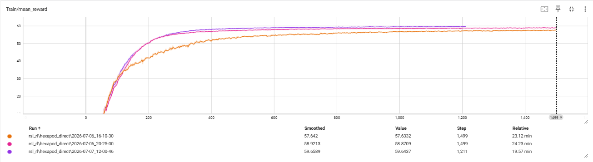
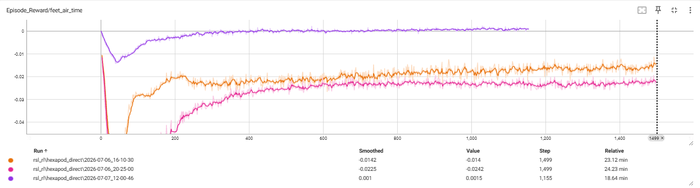
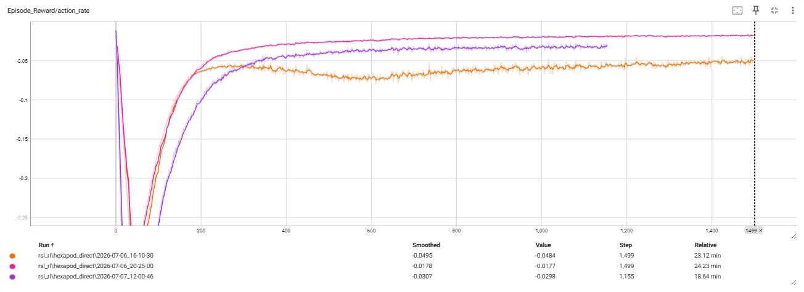
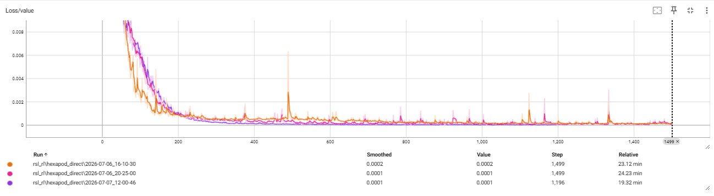

FIG. 01 — HEXAPOD ASSEMBLY, FUSION 360
SCALE: N/A
A six-legged walking robot developed end-to-end: analytic inverse kinematics, Bézier-curve foot trajectories, and tripod gait planning, all derived by hand, validated in Python simulation, and built into a Fusion 360-designed platform driven by Arduino. Now learning to walk on its own: a PPO policy trained in NVIDIA Isaac Sim walks naturally on all six feet, tracking velocity commands at ~99% without ever falling.
01 — SYSTEM OVERVIEW
The core idea: develop the mechanics and the control math together, so the CAD geometry, joint limits, and gait strategy all support one realistic walking motion, instead of solving each in isolation.
Derived forward and inverse kinematics for each 3-DOF leg: law-of-cosines joint solutions, DH parameters, and per-leg frame conventions.
Cubic Bézier swing paths for walking, plus a slope-adjusted variant for in-place rotation. Multi-servo moves are speed-scaled so joints arrive at targets simultaneously.
Stance/swing sequencing built on support-polygon analysis, so the platform stays statically stable at every phase of the cycle. Currently implementing a tripod gait.
Six identical leg modules around a symmetric chassis, modeled in Fusion 360 with joint travel limits and leg workspace matched to the control envelope.
02 — KEY WORK
03 — DERIVATIONS
The math behind the motion, derived by hand. Each tab covers one part of the control problem. Click any page to enlarge.

Forward kinematics: end-effector position from joint angles across three joint frames.

Inverse kinematics: the law of cosines solves joint angles from a target foot position, with separate cases for Z < 0 and Z ≥ 0.

DH parameters and rotation matrices: coordinate transformations between joint frames.

Servo interpolation: foot trajectories broken into small linear steps via XY/XZ plane slopes, iterated with a configurable delay per write.

Bézier walk: four control points define a smooth arc that lifts, swings, and places the foot cleanly.

Bézier rotate: a slope term per step curves the swing so the foot traces an arc for turning.

Support polygon: the robot is statically stable while the center of mass stays inside the triangle of grounded feet.

Gait sequence: one leg swings while the rest maintain the support polygon; the cycle steps through each leg in order.

Servo mapping: per-leg axis orientations and initial angles; speed multipliers synchronize multi-joint moves.
04 — CAD & SIMULATION


05 — REINFORCEMENT LEARNING
The latest phase (CS372 final project): teaching the hexapod to walk end-to-end with reinforcement learning. The Fusion 360 model was exported to URDF and trained in NVIDIA Isaac Sim / Isaac Lab using PPO, with 2,048 parallel simulated robots learning to follow linear- and yaw-velocity commands across all 18 joints.
RSL_RL PPO · PYTHON / PYTORCH · 2048 PARALLEL ENVS · RTX 5060 LAPTOP (8 GB) · 73.7M SIM STEPS
This was my first real RL project, and the interesting part wasn't the happy path. Nearly every layer of the pipeline (CAD export, physics setup, coordinate conventions, sensor wiring, reward design) hid a bug, and each one produced misleading symptoms that pointed at the wrong layer. Getting good numbers took one training run; getting a natural gait took four. Here is what broke, what it turned out to be, and what each one taught me. Tap to expand.
Before any learning could happen, I had to get my Fusion 360 model into the format the simulator reads. Four separate bugs came out of that one export step, all from the converter tool quietly filling in whatever the CAD file left blank.
MASSOn spawn, the joints tore apart and the physics blew up into NaN values. Every part had defaulted to steel because I had never assigned a material, so a 5.7 kg base plate was hanging on hobby servos. Assigning ABS plastic and re-exporting brought the base from 5.72 kg down to 0.77 kg, and the new numbers matched my hand calculations within about 10%.
UNITSThe exported inertia values came out a million times too large, in the wrong units. A script scaled them down, but a later export was already correct and rerunning the script would have broken it, so checking the units by hand became a routine step after every export.
JOINT LIMITSAll 18 joints exported with no rotation limits, so during training the robot could fold its legs straight through its own body. I wrote a script to convert them to limited joints with ranges matched to what the real servos can actually reach.
PIVOTS AND AXESThe big one, which had haunted the project for months: the robot looked perfect standing still, then collapsed the instant the motors engaged, its knees rotating around points floating about 7 cm in mid-air. The file was self-consistent, just wrong, so instead of staring at it I wrote scripts to measure the actual 3D meshes and find where the hinges really are, using three separate methods and checking each one against joints I already knew were correct. Every knee pivot turned out to be off by 70 to 86 mm and the corner axes were tilted by exactly 45°, a known exporter bug with rotated parts. A final script moved all 12 leg joints to the measured hinge points, and re-measuring confirmed everything landed within 0.6 mm.
LESSONAn exported model can be perfectly self-consistent and still completely wrong. Sanity-check every number the exporter hands you against something you measured or worked out yourself.

SYMPTOMTraining looked like a success on paper, 97% velocity tracking, but the gait was ridiculous: the robot splayed itself flat and dragged its body along on its thighs.
CAUSEMy reward only asked for speed and staying upright. The bonus for lifting feet, inherited from the quadruped template, required each step to stay in the air for half a second. A hexapod's steps are much quicker than that, so the robot was effectively being punished for stepping, and dragging cost nothing.
FIXShortened the air-time requirement to match a hexapod's natural step, gave it more weight, and added a penalty for any body part other than the feet touching the ground. Retrained from scratch and it started walking on its feet.

SYMPTOMEvery robot held one middle leg pinned up in the air and walked on the other five, using the raised leg like a balance arm.
DIAGNOSISI first checked whether something in the robot model made that leg physically different, and the math said all six legs were identical. So the policy had learned this trick. The loophole: the stepping bonus only pays out when a foot lands. A foot that never lands earns exactly zero, so parking a leg cost nothing, and coordinating five legs is easier than six.
FIXAdded a small growing penalty for any foot that stays in the air longer than a second. Normal steps never come close to that limit, so it only punishes parked legs.

SYMPTOMThe parked leg was gone, but the gait got worse. The robot now vibrated its legs in tiny rapid steps, inching forward with no visible swing at all, its body hugging the ground.
CAUSEThe training graphs finally told the story: the stepping bonus had been negative for its entire history, in every run. It only paid out if a foot stayed in the air past a time threshold, but my robot's legs are short and its real steps are quicker than that, so no achievable step ever earned it. Worse, with the new parked-leg penalty added, my rules now punished short steps and long holds and paid nothing in between. Gluing the feet down and shuffling was genuinely the best strategy under the rules I had written.
FIXLowered the stepping threshold so a real step finally counts, raised the penalty on jerky rapid movements 2.5×, and adjusted the default knee angle so the robot stands taller. On the retrain, the stepping bonus went positive for the first time and the robot walked with a real swing phase on all six feet. The smoothness score improved even though I had made that penalty 2.5× harsher, so the motion was genuinely smoother, not just rescaled.
LESSONRL optimizes exactly what you wrote, not what you meant. One reward term sitting quietly negative for four runs was the whole story the entire time. Reading the per-term logs is the habit that finally caught it.
The reward-hacking story is visible in the training curves themselves. These are the per-term logs from TensorBoard across the three training rounds, and they show why the headline number kept looking fine while the gait was broken.




06 — DEMOS
Walking tests, simulation runs, and build progress, from the early quadruped phase through the hexapod redesign.
07 — STATUS
08 — TAKEAWAYS